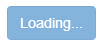
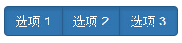
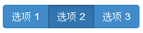
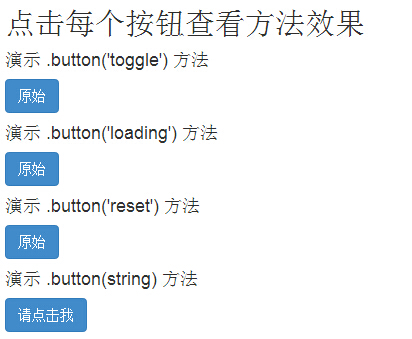

Bootstrap 按钮（Button）
按钮（Button）在 Bootstrap 按钮 一章中介绍过。通过按钮（Button）插件，您可以添加进一些交互，比如控制按钮状态，或者为其他组件（如工具栏）创建按钮组。
如果您想要单独引用该插件的功能，那么您需要引用 button.js。或者，正如 Bootstrap 插件概览 一章中所提到，您可以引用 bootstrap.js 或压缩版的 bootstrap.min.js。
加载状态
如需向按钮添加加载状态，只需要简单地向 button 元素添加 data-loading-text="Loading..." 作为其属性即可，如下面实例所示：
<!DOCTYPE html>
<html>
<head>
<title>Bootstrap 实例 - 按钮（Button）插件加载状态</title>
<link href="/bootstrap/css/bootstrap.min.css" rel="stylesheet">
<script src="/scripts/jquery.min.js"></script>
<script src="/bootstrap/js/bootstrap.min.js"></script>
</head>
<body>
<button id="fat-btn" class="btn btn-primary" data-loading-text="Loading..."
type="button"> 加载状态
</button>
<script>
$(function() {
$(".btn").click(function(){
$(this).button('loading').delay(1000).queue(function() {
// $(this).button('reset');
});
});
});
</script>
</body>
</html>结果如下所示：

单个切换
如需激活单个按钮的切换（即改变按钮的正常状态为按压状态，反之亦然），只需向 button 元素添加 data-toggle="button" 作为其属性即可，如下面实例所示：
<!DOCTYPE html> <html> <head> <title>Bootstrap 实例 - 按钮（Button）插件单个切换</title> <link href="/bootstrap/css/bootstrap.min.css" rel="stylesheet"> <script src="/scripts/jquery.min.js"></script> <script src="/bootstrap/js/bootstrap.min.js"></script> </head> <body> <button type="button" class="btn btn-primary" data-toggle="button"> 单个切换 </button> </body> </html>
结果如下所示：
复选框（Checkbox）
您可以创建复选框组，并通过向 btn-group 添加 data 属性 data-toggle="buttons" 来添加复选框组的切换。
<!DOCTYPE html> <html> <head> <title>Bootstrap 实例 - 按钮（Button）插件复选框</title> <link href="/bootstrap/css/bootstrap.min.css" rel="stylesheet"> <script src="/scripts/jquery.min.js"></script> <script src="/bootstrap/js/bootstrap.min.js"></script> </head> <body> <div class="btn-group" data-toggle="buttons"> <label class="btn btn-primary"> <input type="checkbox"> 选项 1 </label> <label class="btn btn-primary"> <input type="checkbox"> 选项 2 </label> <label class="btn btn-primary"> <input type="checkbox"> 选项 3 </label> </div> </body> </html>
结果如下所示：

单选按钮（Radio）
类似地，您可以创建单选按钮组，并通过向 btn-group 添加 data 属性 data-toggle="buttons" 来添加单选按钮组的切换。
<!DOCTYPE html> <html> <head> <title>Bootstrap 实例 - 按钮（Button）插件单选按钮</title> <link href="/bootstrap/css/bootstrap.min.css" rel="stylesheet"> <script src="/scripts/jquery.min.js"></script> <script src="/bootstrap/js/bootstrap.min.js"></script> </head> <body> <div class="btn-group" data-toggle="buttons"> <label class="btn btn-primary"> <input type="radio" name="options" id="option1"> 选项 1 </label> <label class="btn btn-primary"> <input type="radio" name="options" id="option2"> 选项 2 </label> <label class="btn btn-primary"> <input type="radio" name="options" id="option3"> 选项 3 </label> </div> </body> </html>
结果如下所示：

用法
您可以 通过 JavaScript 启用按钮（Button）插件，如下所示：
$('.btn').button()选项
没有选项。
方法
下面是一些按钮（Button）插件中有用的方法：
| 方法 | 描述 | 实例 |
|---|---|---|
| button('toggle') | 切换按压状态。赋予按钮被激活的外观。您可以使用 data-toggle 属性启用按钮的自动切换。 | $().button('toggle') |
| .button('loading') | 当加载时，按钮是禁用的，且文本变为 button 元素的 data-loading-text 属性的值。 | $().button('loading') |
| .button('reset') | 重置按钮状态，文本内容恢复为最初的内容。当您想要把按钮返回为原始的状态时，该方法非常有用。 | $().button('reset') |
| .button(string) | 该方法中的字符串是指由用户声明的任何字符串。使用该方法，重置按钮状态，并添加新的内容。 | $().button(string) |
实例
下面的实例演示了上面方法的用法：
<!DOCTYPE html>
<html>
<head>
<title>Bootstrap 实例 - 按钮（Button）插件方法</title>
<link href="/bootstrap/css/bootstrap.min.css" rel="stylesheet">
<script src="/scripts/jquery.min.js"></script>
<script src="/bootstrap/js/bootstrap.min.js"></script>
</head>
<body>
<h2>点击每个按钮查看方法效果</h2>
<h4>演示 .button('toggle') 方法</h4>
<div id="myButtons1" class="bs-example">
<button type="button" class="btn btn-primary">原始</button>
</div>
<h4>演示 .button('loading') 方法</h4>
<div id="myButtons2" class="bs-example">
<button type="button" class="btn btn-primary"
data-loading-text="Loading...">原始
</button>
</div>
<h4>演示 .button('reset') 方法</h4>
<div id="myButtons3" class="bs-example">
<button type="button" class="btn btn-primary"
data-loading-text="Loading...">原始
</button>
</div>
<h4>演示 .button(string) 方法</h4>
<button type="button" class="btn btn-primary" id="myButton4"
data-complete-text="Loading finished">请点击我
</button>
<script type="text/javascript">
$(function () {
$("#myButtons1 .btn").click(function(){
$(this).button('toggle');
});
});
$(function() {
$("#myButtons2 .btn").click(function(){
$(this).button('loading').delay(1000).queue(function() {
});
});
});
$(function() {
$("#myButtons3 .btn").click(function(){
$(this).button('loading').delay(1000).queue(function() {
$(this).button('reset');
});
});
});
$(function() {
$("#myButton4").click(function(){
$(this).button('loading').delay(1000).queue(function() {
$(this).button('complete');
});
});
});
</script>
</body>
</html>结果如下所示：
